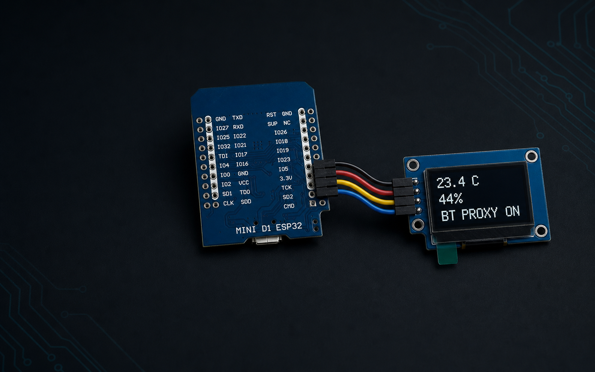

Bluetooth proxy
Extend Bluetooth coverage for nearby BLE devices.
An ESPHome Bluetooth proxy with an OLED climate and status display for Home Assistant.

It turns an ESP32 and a small 128x64 OLED into a Bluetooth proxy with a live climate and status display. Configure what you see, rotate the screen from Home Assistant, and update the device over Wi-Fi.
Extend Bluetooth coverage for nearby BLE devices.
See temperature and humidity at a glance.
Choose the display mode and rotation in Home Assistant.
Display choices survive power loss and restarts.
Check signal, IP address, uptime, and availability.
Install later firmware releases over your local network.
01
The supplied configuration targets the exact AZ-Delivery MINI D1 ESP32 and ZHONG JING YUAN 1.29 inch CH1115 display listed below.
| Qty | Part | Identification | Size | Part code | Buy |
|---|---|---|---|---|---|
| 1 | ESP32 D1 Mini, Micro-USB | ESP-WROOM-32, CP2104, 4 MB | 39 x 31.5 mm | A 20-2 GTIN 4260581559441 | AZ-Delivery |
| 1 | ZHONG JING YUAN 1.29 inch PMOLED | 128x64 IIC, CH1115, white, 0x3C | 20 x 45.8 x 2.7 mm | CH1115-128x64DOT | Alibaba |
| 4 | Dupont wires | Female-to-female with fitted headers | 10 to 20 cm | Any suitable set | Electronics supplier |
| 1 | Micro-USB cable | Must support data | Any practical length | Not fixed | Electronics supplier |
| 1 | 5 V USB supply | Regulated, at least 1 A | Not applicable | Not fixed | Electronics supplier |
Exact display specifications: ZHONG JING YUAN 1.29 inch PMOLED, CH1115 driver, monochrome white, 14.7 x 29.42 mm active area, 0.23 x 0.23 mm pixel pitch, 2.54 mm single-row connector, and -40 to 85 C operating range. ESPHome uses SH1106 128x64 compatibility mode for this module.
| OLED | ESP32 | Purpose |
|---|---|---|
| VCC | 3.3V | Display power |
| GND | GND | Ground |
| SDA | GPIO21 | I2C data |
| SCL | GPIO22 | I2C clock |
Power off before wiring. Use 3.3 V unless your OLED module documentation explicitly requires something else.
02
The first flash uses USB. Later updates can be installed over Wi-Fi.
Clone the project and copy the example secrets file.
git clone https://github.com/WikiZell/ha-proxy-panel.git
cd ha-proxy-panel
cp firmware/secrets.example.yaml firmware/secrets.yamlAdd your Wi-Fi details, generate new security keys, and set the two Home Assistant sensor entity IDs. Connect the ESP32 by USB.
python -m pip install esphome
esphome run firmware/ha-proxy-panel.yamlOpen Settings, Devices & services, then select the discovered ESPHome device. Use the API encryption key when Home Assistant asks for it.
Read the full installation guide03
Two native dropdowns appear on the ESPHome device page. Changes take effect without reflashing and persist after a restart.
The repository includes the firmware, security template, wiring reference, troubleshooting notes, validation workflow, and Pages source.